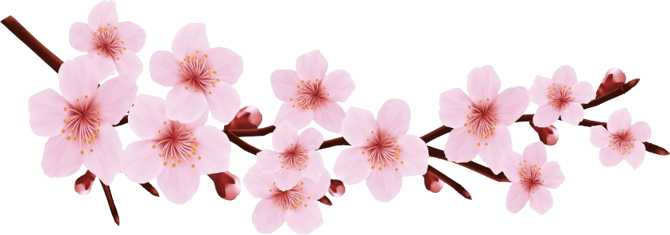
JAPANFEST
O JAPANFEST chega ao Parque do Carmo para celebrar a riqueza e a diversidade da cultura japonesa em sua primeira edição. Entre os dias 1 e 7 de agosto de 2026, o público poderá aproveitar uma programação especial com música, dança, gastronomia, cosplay, artes tradicionais e muito mais. Em meio às famosas cerejeiras do Parque do Carmo, o evento convida você a conhecer diferentes aspectos do Japão e a viver uma experiência cheia de tradição, criatividade e diversão para toda a família.
Conheça o Parque do Carmo
Conhecido por receber anualmente o tradicional Festival das Cerejeiras, o Parque do Carmo é um dos lugares mais especiais de São Paulo para celebrar a cultura japonesa. Com suas áreas verdes e paisagens marcadas pelas sakuras, o parque será o cenário perfeito para a primeira edição do JAPANFEST.
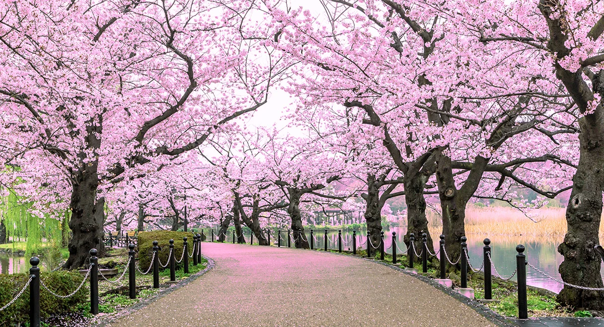
Programação
Apresentações tradicionais
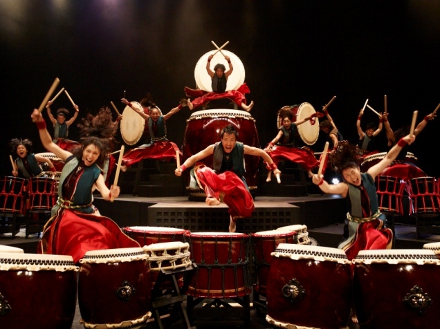
O palco do JAPANFEST receberá apresentações de Taiko, os tradicionais tambores japoneses, além de apresentações de dança típica japonesa e demonstrações de artes marciais.
Cerimônia do Chá
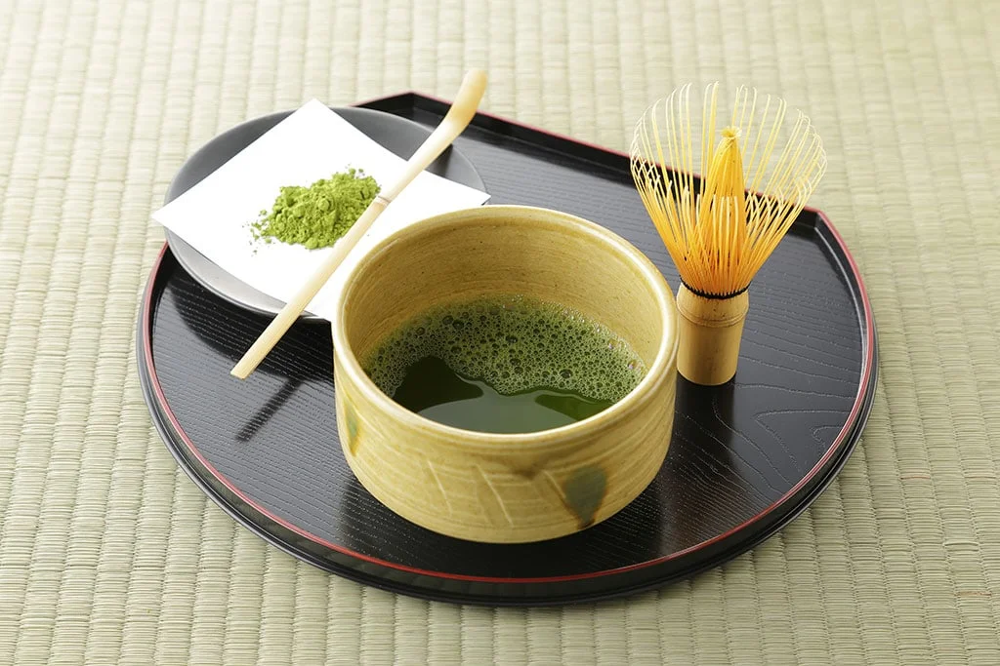
Uma experiência especial para conhecer a tradicional cerimônia japonesa do chá e aprender sobre sua história, seus rituais e sua importância cultural.
Oficinas Culturais
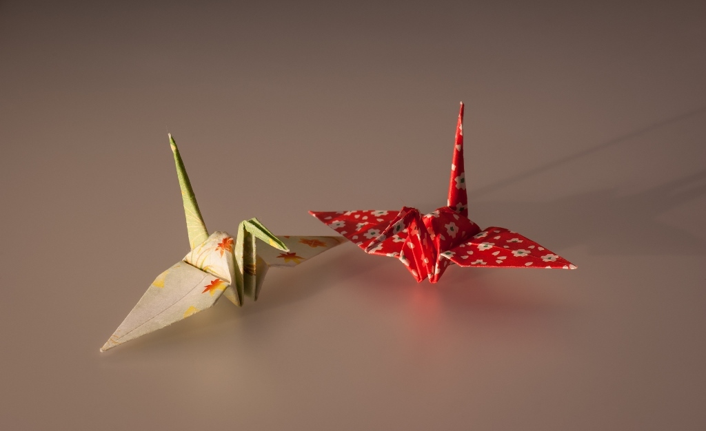
Participe de oficinas de origami, caligrafia japonesa (Shodō) e outras atividades artísticas que permitem conhecer e experimentar tradições japonesas.
Competição de Cosplay

Vista seu personagem favorito e participe da nossa competição de cosplay! Os participantes poderão apresentar seus figurinos e performances para uma banca de jurados e disputar prêmios especiais.
Lojinha Japanfest
Leve um pedacinho do evento para casa! Nossa lojinha terá produtos inspirados na cultura japonesa, lembranças exclusivas do JAPANFEST, itens de decoração, papelaria e muito mais.
E Muito Mais!
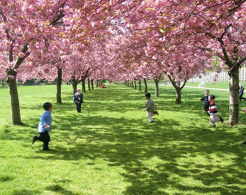
A programação também contará com Experiência Kimono, atividades para crianças, espaços para fotos, exposições e outras atrações especiais.
Cardápio
A gastronomia é uma das melhores formas de conhecer uma nova cultura. No JAPANFEST, você poderá experimentar pratos tradicionais de diferentes regiões do Japão e descobrir novos sabores. Para tornar essa experiência ainda mais especial, o evento contará com a presença de dois chefs convidados, que apresentarão pratos especiais e compartilharão um pouco de suas técnicas e histórias com o público.
GALERIA CULINÁRIA
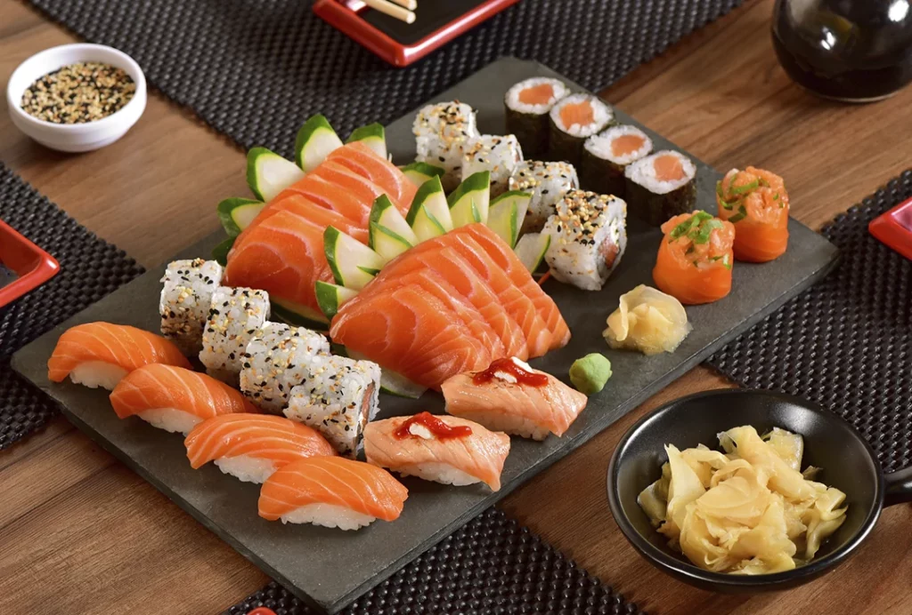
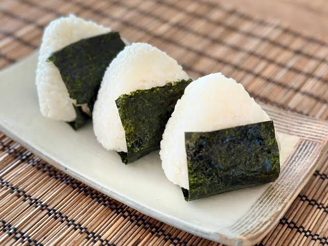
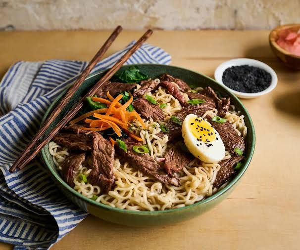
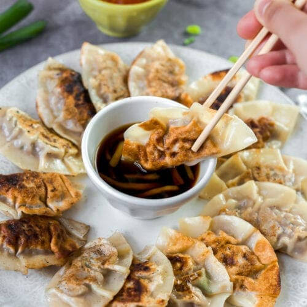
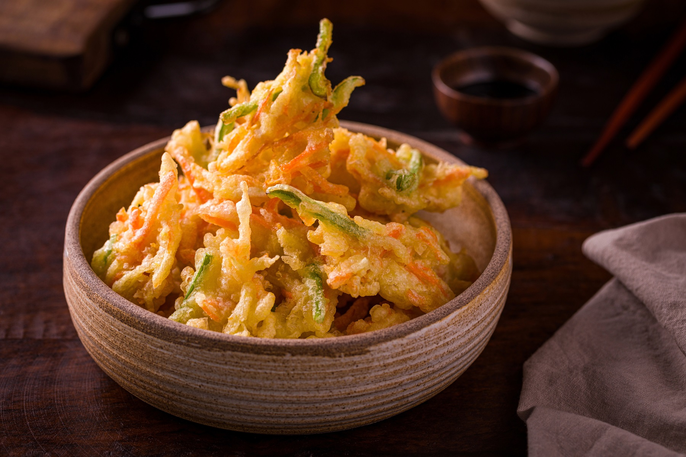
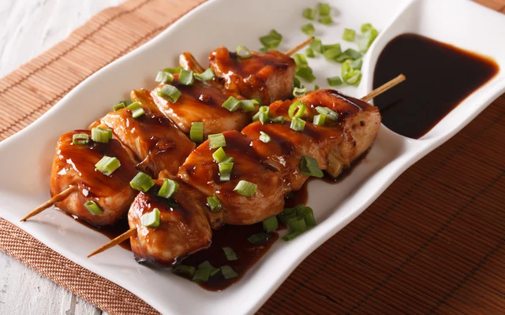
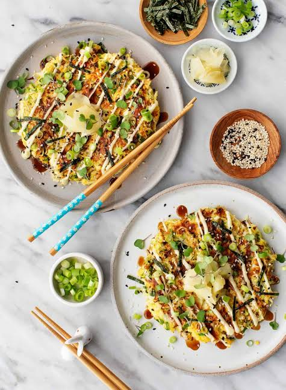
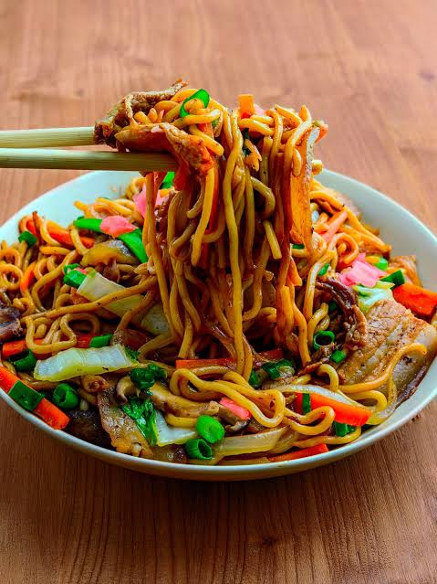
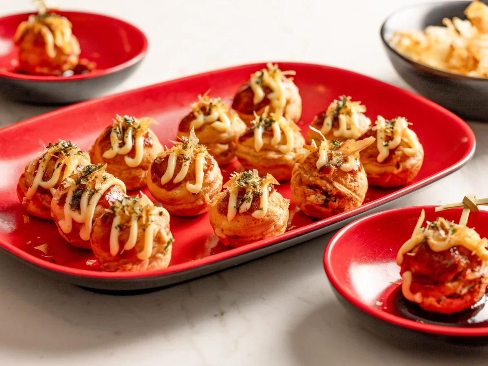
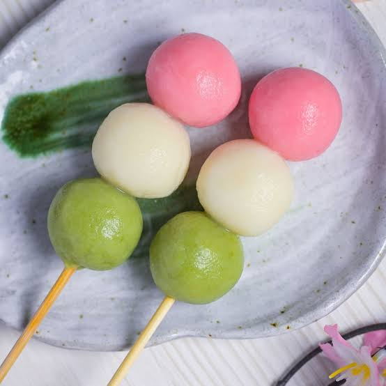

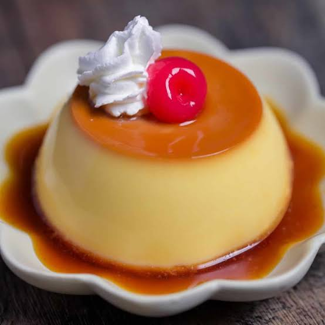

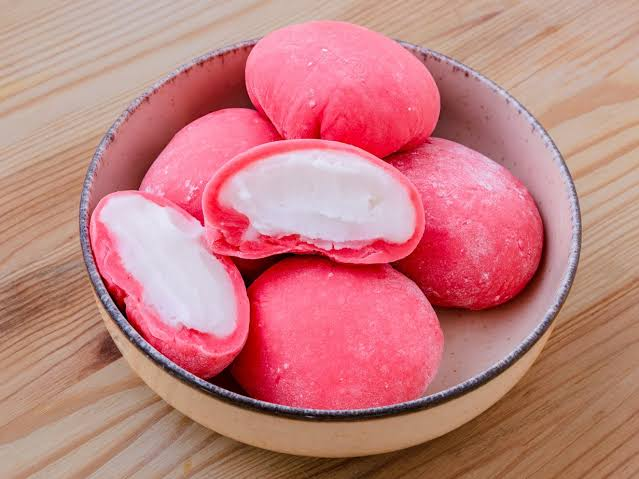

Inscrições
Garanta sua entrada no JAPANFEST!
As inscrições para o festival acontecem aqui mesmo no site! A participação será gratuita, desde que na entrada seja mostrado um email com a confirmação de sua inscrição. Preencha o formulário ao lado para garantir sua participação no JAPANFEST. Venha para o nosso evento!
Atenção: Crianças de até 12 anos precisam estar acompanhadas de um responsável.
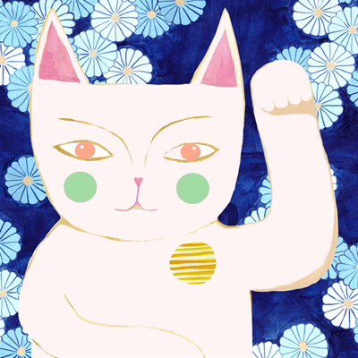